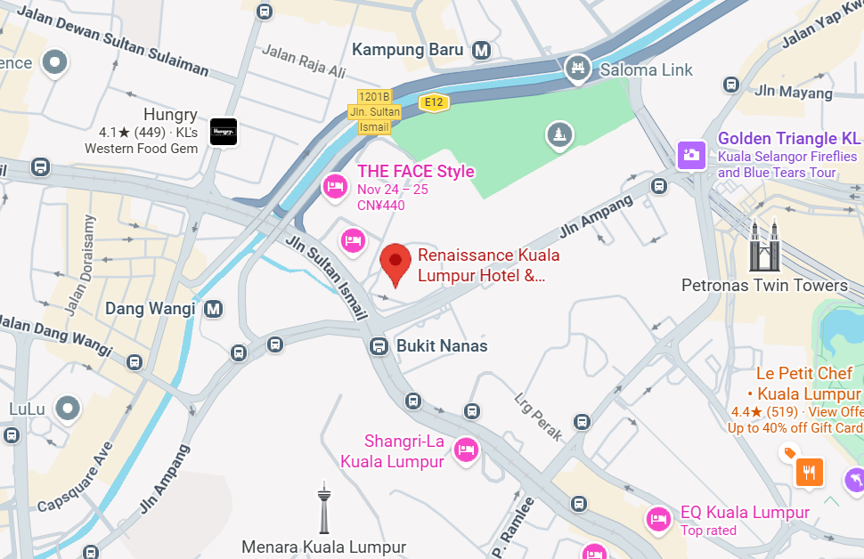
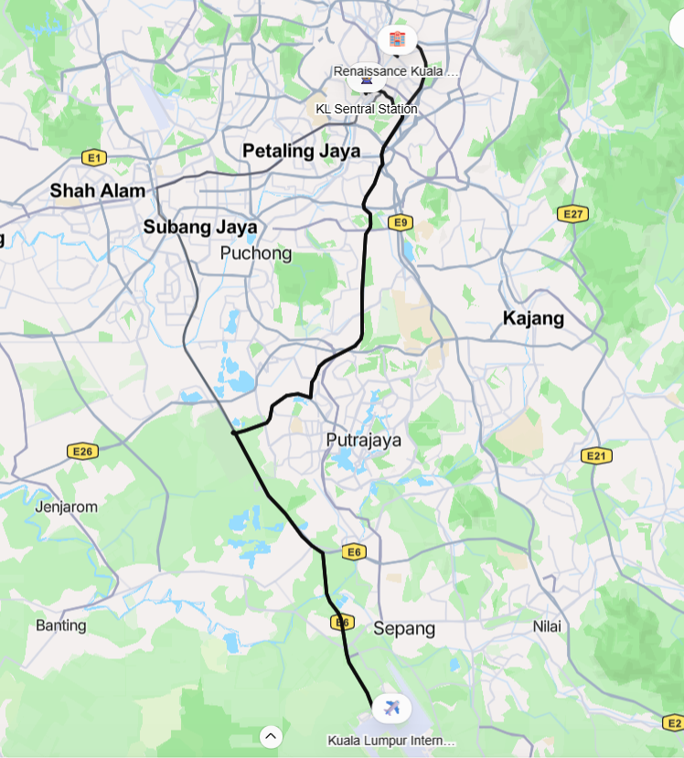

Travel
About Kuala Lumpur
Kuala Lumpur, the capital of Malaysia, is a vibrant city known for its modern skyline, rich cultural heritage, and diverse cuisine. Home to the iconic Petronas Twin Towers, the city blends Malay, Chinese, and Indian traditions with modern urban development. With excellent infrastructure, convenient public transportation, and a welcoming atmosphere, Kuala Lumpur provides an ideal setting for international conferences.
Conference Venue
The IEEE AI for Science Congress 2026, including IEEE ISPA 2026, will be held at the Renaissance Kuala Lumpur Hotel & Convention Centre, located in the heart of Kuala Lumpur's Golden Triangle.
The venue features approximately 52,000 square feet of meeting space, including 26 function rooms and four pre-function lounges. The hotel offers 406 guest rooms, restaurants, a fitness centre, a spa, and an outdoor swimming pool, providing convenient facilities for conference participants.
Venue Address:
Renaissance Kuala Lumpur Hotel & Convention Centre
Corner of Jalan Sultan Ismail and Jalan Ampang
50450 Kuala Lumpur, Malaysia
Hotel Website:
https://www.marriott.com/en-us/hotels/kulrn-renaissance-kuala-lumpur-hotel-and-convention-centre/overview/
Your Neighbourhood
The conference venue is conveniently located near several major attractions. The Petronas Twin Towers and Suria KLCC are approximately a 15-minute walk away, while Pavilion Kuala Lumpur, KL Tower, and KL Forest Eco Park are also easily accessible.
The hotel is directly opposite Bukit Nanas Monorail Station, providing convenient access to shopping districts, restaurants, and cultural attractions throughout the city.
Kuala Lumpur Location Map

Transportation
Kuala Lumpur International Airport (KLIA) is approximately 55–60 km from the conference venue. Participants can reach the hotel using the following options:
Option 1: KLIA Ekspres + Taxi/Grab (Recommended)
Take the KLIA Ekspres from KLIA to KL Sentral Station (approximately 28–33 minutes). From KL Sentral, take a taxi or Grab to the conference hotel (approximately 15–25 minutes).
- KLIA Ekspres fare: RM55 one-way until 31 December 2026; RM65 from 1 January 2027.
- Website: https://www.kliaekspres.com/
Option 2: Taxi/Grab (Direct Transfer)
Take a taxi or Grab directly from KLIA to the Renaissance Kuala Lumpur Hotel & Convention Centre.
- Travel time: Approximately 50–75 minutes.
- Estimated fare: RM80–120, depending on traffic and additional charges.
Kuala Lumpur Transportation Map
